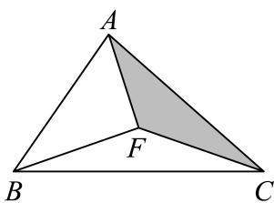
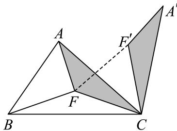
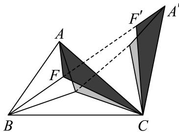
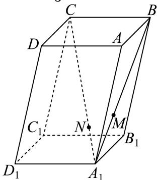
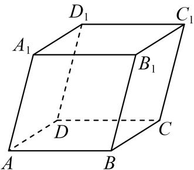
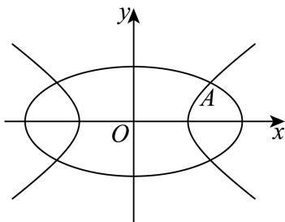

坐标运算、共线垂直与投影 用坐标条件求参数，数量投影须除以投影方向向量的模。
嘉定 · 第3题 ★☆☆☆☆ · 教师预估 已知向量 m ⃗ = ( 1 , − 2 ) , n ⃗ = ( k , 4 ) \vec { m } = ( 1 , - 2 ) , \vec { n } = ( k , 4 ) m = ( 1 , − 2 ) , n = ( k , 4 ) ⋅ m → ⊥ n → , \cdot \overrightarrow { m } \perp \overrightarrow { n } , ⋅ m ⊥ n , k =
宝山 · 第13题 ★☆☆☆☆ · 教师预估 本题资料或解析有待核事项，预览不可作为已审定成品。
已知向量 a → = ( 1 , x ) , b → = ( 3 , 1 ) \overrightarrow { a } = ( 1 , x ) , \overrightarrow { b } = ( 3 , 1 ) a = ( 1 , x ) , b = ( 3 , 1 ) ∣ a ∣ → / ∣ b → \overrightarrow { \vert a \vert } / \overrightarrow { \vert b } ∣ a ∣ / ∣ b
A. −3
B. 3
C. − 1 3 - { \frac { 1 } { 3 } } − 3 1
D. 1 3 \frac 1 3 3 1
崇明 · 第5题 ★☆☆☆☆ · 教师预估 已知 ∣ a ⃗ = ( 1 , 0 ) , b ⃗ = ( 2 , 1 ) \vec { | a } = ( 1 , 0 ) , \vec { b } = ( 2 , 1 ) ∣ a = ( 1 , 0 ) , b = ( 2 , 1 ) ∣ a ⃗ + 2 b ⃗ ∣ = | { \vec { a } } + 2 { \vec { b } } | = ∣ a + 2 b ∣ =
徐汇 · 第3题 ★☆☆☆☆ · 教师预估 本题资料或解析有待核事项，预览不可作为已审定成品。
在空间直角坐标系中，向 Ξ a → = ( − m , 6 , 3 ) , b → = ( 2 , n , 1 ) \overrightarrow { \Xi a } = ( - m , 6 , 3 ) , \overrightarrow { b } = ( 2 , n , 1 ) Ξ a = ( − m , 6 , 3 ) , b = ( 2 , n , 1 ) a → / / b → \overrightarrow { a } / / \overrightarrow { b } a // b ∣ m + n = \left| m + n = \right. ∣ m + n =
松江 · 第4题 ★☆☆☆☆ · 教师预估 已知空间向量 ı ⃗ = ( 2 , m , 3 ) , b ⃗ = ( − 4 , 2 , 2 ) \vec { \imath } = ( 2 , m , 3 ) , \vec { b } = ( - 4 , 2 , 2 ) = ( 2 , m , 3 ) , b = ( − 4 , 2 , 2 ) ⋅ a → ⊥ b → \overrightarrow { \cdot a } \bot \overrightarrow { b } ⋅ a ⊥ b
浦东 · 第2题 ★☆☆☆☆ · 教师预估 已知向量→ a τ ⃗ = ( 1 , 2 ) , b ⃗ = ( m , 1 ) \mathbf { \vec { \tau } } = ( 1 , 2 ) , \vec { b } = ( m , 1 ) τ = ( 1 , 2 ) , b = ( m , 1 ) → a ⊥ b ⃗ \perp \vec { b } ⊥ b
金山 · 第3题 ★☆☆☆☆ · 教师预估 已知向 E → a → = ( x , 1 ) , b → = ( 1 , 2 − x ) \overrightarrow { \mathbb { E } } \overrightarrow { a } = ( x , 1 ) , \overrightarrow { b } = ( 1 , 2 - x ) E a = ( x , 1 ) , b = ( 1 , 2 − x ) Π → a → / / b → \overrightarrow { \Pi } \overrightarrow { a } / \overrightarrow { / b } Π a / / b
闵行 · 第6题 ★★☆☆☆ · 教师预估 已知向量 a ⃗ + = ( 3 , 4 ) , b ⃗ − = ( cos θ , sin θ ) \vec { \mathbf { a } } ^ { + } = ( \mathbf { 3 } , 4 ) , \vec { b } ^ { - } = ( \cos \theta , \sin \theta ) a + = ( 3 , 4 ) , b − = ( cos θ , sin θ ) a → / / b → \overrightarrow { \mathrm { a } } / / \overrightarrow { \mathrm { b } } a // b
青浦 · 第5题 ★☆☆☆☆ · 教师预估 本题资料或解析有待核事项，预览不可作为已审定成品。
向 E → a → = ( 310 , 118 ) \overrightarrow { \mathbb { E } } \overrightarrow { a } = ( 3 1 0 , 1 1 8 ) E a = ( 310 , 118 ) Ξ Ξ b ⃗ = ( 0 , 2025 ) \stackrel { \Xi } { \scriptscriptstyle \Xi } \vec { b } = ( 0 , 2 0 2 5 ) Ξ Ξ b = ( 0 , 2025 )
平面几何中的分点、夹角与模最值 选基底或坐标表达分点与中线，再用数量积、旋转或距离意义处理夹角和最值。
奉贤 · 第12题 ★★★★☆ · 教师预估 本题资料或解析有待核事项，预览不可作为已审定成品。
△ A B C \triangle ABC △ A BC F F F F A + F C + F B FA+FC+FB F A + FC + FB 1 × F A + 1 × F C + 1 × F B 1\times FA+1\times FC+1\times FB 1 × F A + 1 × FC + 1 × FB F A FA F A F C FC FC F B FB FB △ A F C \triangle AFC △ A FC C C C π 3 \dfrac\pi3 3 π △ A ′ F ′ C \triangle A'F'C △ A ′ F ′ C F A + F C + F B FA+FC+FB F A + FC + FB F ′ A ′ + F ′ F + F B F'A'+F'F+FB F ′ A ′ + F ′ F + FB F ′ A ′ + F ′ F + F B ≥ A ′ B F'A'+F'F+FB\geq A'B F ′ A ′ + F ′ F + FB ≥ A ′ B A ′ A' A ′ F ′ F' F ′ F F F B B B F A + F C + F B FA+FC+FB F A + FC + FB
图1
图2
图3



试用类似的方法解决下面这道题目：
已知 a ⃗ \vec a a b ⃗ \vec b b c ⃗ \vec c c b ⃗ ⋅ c ⃗ = 0 \vec b\cdot\vec c=0 b ⋅ c = 0 ∣ b ⃗ ∣ = 4 |\vec b|=4 ∣ b ∣ = 4 ∣ c ⃗ ∣ = 4 |\vec c|=4 ∣ c ∣ = 4 2 ∣ a ⃗ − b ⃗ ∣ + ∣ a ⃗ − c ⃗ ∣ + ∣ a ⃗ + c ⃗ ∣ \sqrt2|\vec a-\vec b|+|\vec a-\vec c|+|\vec a+\vec c| 2 ∣ a − b ∣ + ∣ a − c ∣ + ∣ a + c ∣
宝山 · 第9题 ★★☆☆☆ · 教师预估 已知 △ A B C \triangle A B C △ A BC A B = A C = 4 , ∠ B A C = 2 3 π A B = A C = 4 , \angle B A C = \frac { 2 } { 3 } \pi A B = A C = 4 , ∠ B A C = 3 2 π S △ A C D = 2 S △ A B D S _ { \triangle A C D } = 2 S _ { \triangle A B D } S △ A C D = 2 S △ A B D A B → ⋅ A D → \overrightarrow { A B } \cdot \overrightarrow { A D } A B ⋅ A D
徐汇 · 第8题 ★★☆☆☆ · 教师预估 本题资料或解析有待核事项，预览不可作为已审定成品。
已知ABCD 是正方形，点M 是AB 的中点，点E 在对角线AC 上，且 A E ⟶ = 3 E C ⟶ \stackrel { \longrightarrow } { A E } = \stackrel { \longrightarrow } { 3 E C } A E ⟶ = 3 EC ⟶ MED 的大小为
杨浦 · 第15题 ★★★☆☆ · 教师预估 本题资料或解析有待核事项，预览不可作为已审定成品。
已知 、 、 是单位圆上的三个点，若 A B → ∣ = 2 { \overrightarrow { A B } } \vert = { \sqrt { 2 } } A B ∣ = 2 A B → ⋅ B C → \overrightarrow { A B } \cdot \overrightarrow { B C } A B ⋅ BC
A. 2 \sqrt { 2 } 2
B. 1 + 2 2 1 + { \frac { \sqrt { 2 } } { 2 } } 1 + 2 2
C. 2 + 1 { \sqrt { 2 } } + 1 2 + 1
D. 2 − 1 { \sqrt { 2 } } - 1 2 − 1
长宁 · 第10题 ★★★☆☆ · 教师预估 已知点D、E分别是三角形ABC的边AC、BC的中点，且 A E = 2 , B D = 3 A E = 2 , B D = 3 A E = 2 , B D = 3
向量表达式生成三角函数 展开数量积后用倍角和辅助角归一，考察周期、单调及平移奇偶。
长宁 · 第17题 ★★★☆☆ · 教师预估 已知向量 m ⃗ = ( sin x + cos x , 2 sin x ) , n ⃗ = ( sin x − cos x , 3 cos x ) , f ( x ) = m ⃗ ⋅ n ⃗ . { \vec { m } } = ( \sin x + \cos x , 2 \sin x ) , { \vec { n } } = \left( \sin x - \cos x , { \sqrt { 3 } } \cos x \right) , f ( x ) = { \vec { m } } \cdot { \vec { n } } . m = ( sin x + cos x , 2 sin x ) , n = ( sin x − cos x , 3 cos x ) , f ( x ) = m ⋅ n . y = f ( x ) − a \boldsymbol { \mathfrak { y } } = \boldsymbol { f } ( \boldsymbol { x } ) - \boldsymbol { a } y = f ( x ) − a ( 0 , π 2 ) \left( 0 , { \frac { \pi } { 2 } } \right) ( 0 , 2 π )
静安 · 第17题 ★★★☆☆ · 教师预估 本题资料或解析有待核事项，预览不可作为已审定成品。
已知向 E q . → E q . → = ( cos ( x + π 6 ) , sin ( x + π 6 ) ) , b → = ( cos ( x + π 6 ) , − sin ( x + π 6 ) ) \begin{array} { l } { \displaystyle { \frac { \overrightarrow { \sf E q . } } { \overrightarrow { \sf E q . } } } = \left( \cos \left( x + \frac { \pi } { 6 } \right) , \sin \left( x + \frac { \pi } { 6 } \right) \right) , \overrightarrow { \sf b } } = \left( \cos \left( x + \frac { \pi } { 6 } \right) , - \sin \left( x + \frac { \pi } { 6 } \right) \right) \end{array} Eq. Eq. = ( cos ( x + 6 π ) , sin ( x + 6 π ) ) , b = ( cos ( x + 6 π ) , − sin ( x + 6 π ) ) f ( x ) = a ⋅ b f ( x ) = \stackrel { } { a } \cdot \stackrel { } { b } f ( x ) = a ⋅ b y = f ( x ) y = f \left( x \right) y = f ( x ) [ y = f ( x + θ ) \left[ { { y } } = { { f } \left( { x + \theta } \right) } \right. [ y = f ( x + θ ) θ ∈ ( 0 , π 2 ) ) \theta \in \left( 0 , \frac { \pi } { 2 } \right) ) θ ∈ ( 0 , 2 π ) )
空间基底、线性关系与法向量 先建立可用空间基底，再由法向量求角距或用线性关系确定位置；保留完整几何大题。
奉贤 · 第14题 ★★☆☆☆ · 教师预估 本题资料或解析有待核事项，预览不可作为已审定成品。
如图，在平行六面体 A B C D − A 1 B 1 C 1 D 1 ABCD-A_1B_1C_1D_1 A BC D − A 1 B 1 C 1 D 1 N N N A 1 C A_1C A 1 C M M M A 1 B A_1B A 1 B A 1 N → = 1 3 N C → \overrightarrow{A_1N}=\frac13\overrightarrow{NC} A 1 N = 3 1 NC A 1 M → = 1 2 M B → \overrightarrow{A_1M}=\frac12\overrightarrow{MB} A 1 M = 2 1 MB

A. M N → ∥ B C → \overrightarrow{MN}\parallel\overrightarrow{BC} MN ∥ BC
B. D 1 , N , M D_1,N,M D 1 , N , M
C. D 1 M D_1M D 1 M A 1 C A_1C A 1 C
D. D 1 N → = 1 2 N M → \overrightarrow{D_1N}=\frac12\overrightarrow{NM} D 1 N = 2 1 NM
普陀 · 第17题 ★★★☆☆ · 教师预估 如图，在三棱柱 A B C − A 1 B 1 C 1 A B C - A _ { 1 } B _ { 1 } C _ { 1 } A BC − A 1 B 1 C 1 A C = A A 1 = A B = 2 , ∠ B A A 1 = π 3 A C = A A _ { 1 } = A B = 2 , \angle B A A _ { 1 } = { \frac { \pi } { 3 } } A C = A A 1 = A B = 2 , ∠ B A A 1 = 3 π C A 1 = C B , C A 1 ⊥ A B 1
C A _ {1} = C B, C A _ {1} \bot A B _ {1}
C A 1 = CB , C A 1 ⊥ A B 1 C A B 1 ⊥ C A B _ { 1 } \bot C A B 1 ⊥ A A 1 B 1 B ⋅ A A _ { 1 } B _ { 1 } B _ { \cdot } A A 1 B 1 B ⋅ C A 1 C A _ { 1 } C A 1 B B 1 C 1 B B _ { 1 } C _ { 1 } B B 1 C 1
松江 · 第15题 ★★★☆☆ · 教师预估 在正三棱柱 A B C − A 1 B 1 C 1 A B C - A _ { 1 } B _ { 1 } C _ { 1 } A BC − A 1 B 1 C 1 A B = A A 1 = 1 A B = A A _ { 1 } = 1 A B = A A 1 = 1 B P → = λ B C → + B B 1 → , λ ∈ ( 0 , 1 ) \overrightarrow { B P } = \lambda \overrightarrow { B C } + \overrightarrow { B B _ { 1 } } , \lambda \in ( 0 \mathrm { ~ , ~ } 1 ) BP = λ BC + B B 1 , λ ∈ ( 0 , 1 )
A. 四棱锥 P − A 1 A B B 1 P - A _ { 1 } A B B _ { 1 } P − A 1 A B B 1
B. 四棱锥 P − A 1 A C C 1 P - A _ { 1 } A C C _ { 1 } P − A 1 A C C 1
C. 三棱锥 P − A 1 B 1 C 1 P - A _ { 1 } B _ { 1 } C _ { 1 } P − A 1 B 1 C 1
D. 三棱锥 P − A 1 B C P - A _ { 1 } B C P − A 1 BC
浦东 · 第18题 ★★★☆☆ · 教师预估 本题资料或解析有待核事项，预览不可作为已审定成品。
如图，四边形ABCD为长方形，PA⊥平面ABCD， A B = A P = 2 A B = A P = 2 A B = A P = 2 P G . P G . PG . 3 0 ∘ ? 3 0 ^ { \circ } ? 3 0 ∘ ?
金山 · 第18题 ★★★☆☆ · 教师预估 P − A B C D P - A B C D P − A BC D P B C , A B = 2 D C = 4 , B C = 2 2 , A B ⊥ B C , D C / / A B P B C , A B = 2 D C = 4 , B C = 2 \sqrt { 2 } , A B \bot B C , D C / / A B PBC , A B = 2 D C = 4 , BC = 2 2 , A B ⊥ BC , D C // A B A B C D ⊥ A B C D \bot A BC D ⊥ P A B P A B P A B ∠ A B P = π 3 \angle A B P = { \frac { \pi } { 3 } } ∠ A BP = 3 π
闵行 · 第17题 ★★★☆☆ · 教师预估 如图，在四棱锥P − ABCD中，底面ABCD为长方形，PA⊥底面ABCD，E是 P C Π P C ^ { \mathsf { \Pi } } P C Π A B = 2 , A D = 2 2 , P A = 2 A B = 2 , A D = 2 { \sqrt { 2 } } , P A = 2 A B = 2 , A D = 2 2 , P A = 2 A D ⊥ B P ; A D \bot B P ; A D ⊥ BP ;
静安 · 第19题 ★★★★☆ · 教师预估 如图，在正三棱柱 A B C − A 1 B 1 C 1 A B C - A _ { 1 } B _ { 1 } C _ { 1 } A BC − A 1 B 1 C 1 A A 1 = 2 A C = 4 A A _ { 1 } = 2 A C = 4 A A 1 = 2 A C = 4 C B = B D C B = B D CB = B D C 1 B / / C _ { 1 } B / / C 1 B // A B 1 D A B _ { 1 } D A B 1 D A E ⊥ D B 1 A E \bot D B _ { 1 } A E ⊥ D B 1 B 1 − A D − B _ { 1 } - A D - B 1 − A D −
黄浦 · 第14题 ★★★☆☆ · 教师预估 本题资料或解析有待核事项，预览不可作为已审定成品。
如图，在平行六面体 A B C D − A 1 B 1 C 1 D 1 A B C D - A _ { 1 } B _ { 1 } C _ { 1 } D _ { 1 } A BC D − A 1 B 1 C 1 D 1 1 中， i × a → = A A 1 → , b → = D B 1 → \mathrm { i } \overrightarrow { \times a } = \overrightarrow { A A _ { 1 } } , \overrightarrow { b } = \overrightarrow { D B _ { 1 } } i × a = A A 1 , b = D B 1 → a、 b ⃗ . \vec { b } . b . → c组成空间向量的一个基底，则→ c 可以是（ ）

A.
− B B 1 → \overrightarrow { B B _ { 1 } } B B 1
B.
− B C 1 → \overrightarrow { B C _ { 1 } } B C 1
C.
− → B D \xrightarrow [ B D ] { } B D
D.
− → \xrightarrow { } 圆锥曲线中的向量约束 把共线、分点、数量积及投影转为坐标关系，与曲线方程联立研究范围或定值。
奉贤 · 第20题 ★★★★★ · 教师预估 本题资料或解析有待核事项，预览不可作为已审定成品。
如图1，曲线 Γ \Gamma Γ x 2 4 + y 2 b 2 = 1 ( y ≥ 0 ) \dfrac{x^2}{4}+\dfrac{y^2}{b^2}=1\ (y\ge0) 4 x 2 + b 2 y 2 = 1 ( y ≥ 0 ) y 2 b 2 − x 2 4 = 1 ( y ≥ 0 ) \dfrac{y^2}{b^2}-\dfrac{x^2}{4}=1\ (y\ge0) b 2 y 2 − 4 x 2 = 1 ( y ≥ 0 )
图1
图2
(1)（4分）x 2 4 + y 2 b 2 = 1 ( y ≥ 0 ) \dfrac{x^2}{4}+\dfrac{y^2}{b^2}=1\ (y\ge0) 4 x 2 + b 2 y 2 = 1 ( y ≥ 0 ) ( − 1 , 3 2 ) \left(-1,\dfrac32\right) ( − 1 , 2 3 ) y 2 b 2 − x 2 4 = 1 ( y ≥ 0 ) \dfrac{y^2}{b^2}-\dfrac{x^2}{4}=1\ (y\ge0) b 2 y 2 − 4 x 2 = 1 ( y ≥ 0 )
(2)（6分）b = 2 b=\sqrt2 b = 2 T ( 0 , t ) T(0,t) T ( 0 , t ) t ∈ [ − 2 2 , 3 2 ] t\in\left[-\dfrac{\sqrt2}{2},3\sqrt2\right] t ∈ [ − 2 2 , 3 2 ] Γ \Gamma Γ Q Q Q ∣ T Q → ∣ |\overrightarrow{TQ}| ∣ TQ ∣
(3)（8分）若 b = 1 b=1 b = 1 P ( 0 , 1 ) P(0,1) P ( 0 , 1 ) l 1 l_1 l 1 l 2 l_2 l 2 Γ \Gamma Γ A A A M M M B B B N N N A A A M M M λ \lambda λ M N → = λ A B → \overrightarrow{MN}=\lambda\overrightarrow{AB} MN = λ A B
宝山 · 第20题 ★★★★☆ · 教师预估 本题资料或解析有待核事项，预览不可作为已审定成品。
C : x 2 − y 2 3 = 1 , F 1 C { : } x ^ { 2 } - \frac { y ^ { 2 } } { 3 } = 1 , F _ { 1 } C : x 2 − 3 y 2 = 1 , F 1 F 2 F _ { 2 } F 2 F 2 F _ { 2 } F 2 ∣ A B ∣ = 6 H | A B | = 6 \mathbb { H } ∣ A B ∣ = 6 H △ A B F 1 \triangle A B F _ { 1 } △ A B F 1 分 )已知点N (−2, 3)，若直线AN、BN的斜率之和为0，且 tan ∠ A N B = 4 3 \tan \angle A N B = \frac { 4 } { 3 } tan ∠ A NB = 3 4 △ R S N \triangle R S N △ RSN (3) (8分) 已知直线l过点F2 ，P是双曲线C上一点且位于第一象限，且满足− F 2 F _ { 2 } F 2 O Q → = 2 O P → \overrightarrow { O Q } = 2 \overrightarrow { O P } OQ = 2 OP A B → = 2 Q F 2 → \overrightarrow { A B } = 2 \overrightarrow { Q F _ { 2 } } A B = 2 Q F 2
崇明 · 第20题 ★★★★☆ · 教师预估 本题资料或解析有待核事项，预览不可作为已审定成品。
已知抛物线Γ: x 2 = 4 y , x ^ { 2 } = 4 y , x 2 = 4 y , P ( a , b ) P \left( a , b \right) P ( a , b ) D A ⊥ D B D A \bot D B D A ⊥ D B
普陀 · 第20题 ★★★★☆ · 教师预估 设 a > b > 0 , m > 0 a > b > 0 , m > 0 a > b > 0 , m > 0 x 2 a 2 + y 2 b 2 = 1 { \frac { x ^ { 2 } } { a ^ { 2 } } } + { \frac { y ^ { 2 } } { b ^ { 2 } } } = 1 a 2 x 2 + b 2 y 2 = 1 ∣ A F ∣ = 2. \left| A F \right| = 2 { \mathrm { . } } ∣ A F ∣ = 2 . l : x − m y − 1 = 0 l { : } x - m y - 1 = 0 l : x − m y − 1 = 0 m = 3 . m = { \sqrt { 3 } } . m = 3 . △ M P Q \triangle M P Q △ MPQ 6 13 \frac { 6 } { 1 3 } 13 6 分 )若点G在直线x = 5上，向量 P G ⃗ \vec { P G } PG P F ⃗ \vec { P F } PF ∠ P G Q < π 4 \angle P G Q < \frac { \pi } { 4 } ∠ PGQ < 4 π
杨浦 · 第20题 ★★★★★ · 教师预估 本题资料或解析有待核事项，预览不可作为已审定成品。
已知双曲线Γ的标准方程为 x 2 − y 2 2 = 1 x ^ { 2 } - { \frac { y ^ { 2 } } { 2 } } = 1 x 2 − 2 y 2 = 1 (2) (6分) 过点P分别向两条渐近线作垂线，垂足为点 P 1 , P 2 P _ { 1 } , P _ { 2 } P 1 , P 2 − P P 1 → ⋅ P P 2 → \overrightarrow { P P _ { 1 } } \cdot \overrightarrow { P P _ { 2 } } P P 1 ⋅ P P 2 ∣ O P ∣ > 2 , | O P | > { \sqrt { 2 } } , ∣ OP ∣ > 2 , O : x 2 + y 2 = O \colon x ^ { 2 } + y ^ { 2 } = O : x 2 + y 2 = ∣ P Q ∣ = λ ∣ A B ∣ | P Q | = \lambda | A B | ∣ PQ ∣ = λ ∣ A B ∣
浦东 · 第20题 ★★★★★ · 教师预估 本题资料或解析有待核事项，预览不可作为已审定成品。
已知椭圆 C 1 C_1 C 1 x 2 3 + y 2 = 1 \frac{x^2}{3}+y^2=1 3 x 2 + y 2 = 1 A A A B B B C 2 C_2 C 2 C 2 C_2 C 2 x 2 a 2 + y 2 2 a = 1 ( a > 0 ) \frac{x^2}{a^2}+\frac{y^2}{2a}=1\ (a>0) a 2 x 2 + 2 a y 2 = 1 ( a > 0 ) x x x a a a C 2 C_2 C 2 x x x A B AB A B C 2 C_2 C 2 C C C D D D ∣ C D ∣ = 3 ∣ A B ∣ |CD|=3|AB| ∣ C D ∣ = 3∣ A B ∣ C 2 C_2 C 2 C 2 C_2 C 2 y y y P P P C 1 C_1 C 1 Q Q Q C 2 C_2 C 2 △ A P Q \triangle APQ △ A PQ ∣ A P ∣ = ∣ A Q ∣ |AP|=|AQ| ∣ A P ∣ = ∣ A Q ∣ C 2 C_2 C 2
虹口 · 第20题 ★★★★☆ · 教师预估 本题资料或解析有待核事项，预览不可作为已审定成品。
已知点 F 1 F _ { 1 } F 1 F 2 F _ { 2 } F 2 C : x 2 a 2 − y 2 = 1 ( a > 0 ) C \colon \frac { x ^ { 2 } } { a ^ { 2 } } - y ^ { 2 } = 1 \left( a > 0 \right) C : a 2 x 2 − y 2 = 1 ( a > 0 ) y = x y = x y = x a = 2 H m o d a = { \sqrt { 2 } } \mathbb { H } { \bmod { } } a = 2 H mod ∣ P F 1 ∣ + ∣ P F 2 ∣ = 4. | P F _ { 1 } | + | P F _ { 2 } | = 4 . ∣ P F 1 ∣ + ∣ P F 2 ∣ = 4. △ P F 1 F 2 \triangle P F _ { 1 } F _ { 2 } △ P F 1 F 2 F 1 B A F 2 F _ { 1 } B A F _ { 2 } F 1 B A F 2 2 a 2 + 1 2 \sqrt { a ^ { 2 } + 1 } 2 a 2 + 1 F 2 A ‾ = λ F 1 B ‾ { \overline { { F _ { 2 } A } } } = \lambda { \overline { { F _ { 1 } B } } } F 2 A = λ F 1 B
金山 · 第16题 ★★★★☆ · 教师预估 本题资料或解析有待核事项，预览不可作为已审定成品。
已知点A ( x 1 , y 1 ) ( x _ { 1 } , y _ { 1 } ) ( x 1 , y 1 ) x 2 + y 2 = 9. x ^ { 2 } + y ^ { 2 } = 9 . x 2 + y 2 = 9. B ( x 2 , y 2 ) B \left( x _ { 2 } , y _ { 2 } \right) B ( x 2 , y 2 ) x 2 + y 2 = 12 x ^ { 2 } + y ^ { 2 } = 1 2 x 2 + y 2 = 12 x 1 x 2 + y 1 y 2 = x 1 + x 2 − 1 x _ { 1 } x _ { 2 } + y _ { 1 } y _ { 2 } = x _ { 1 } + x _ { 2 } - 1 x 1 x 2 + y 1 y 2 = x 1 + x 2 − 1 A P ⊥ B P A P \bot B P A P ⊥ BP 22 { \sqrt { 2 2 } } 22
A. ①是真命题，②是真命题
B. ①是假命题，②是真命题
C. ①是真命题，②是假命题
D. ①是假命题，②是假命题
金山 · 第20题 ★★★★★ · 教师预估 本题资料或解析有待核事项，预览不可作为已审定成品。
已知椭圆Γ: x 2 4 + y 2 3 = 1 { \frac { x ^ { 2 } } { 4 } } + { \frac { y ^ { 2 } } { 3 } } = 1 4 x 2 + 3 y 2 = 1 F 1 , F 2 F _ { 1 } , F _ { 2 } F 1 , F 2 C , D , C , D , C , D , △ A F 1 F 2 \triangle A F _ { 1 } F _ { 2 } △ A F 1 F 2 . △ A B Q . \triangle A B Q .△ A BQ △ F 1 F 2 Q \triangle F _ { 1 } F _ { 2 } Q △ F 1 F 2 Q
长宁 · 第20题 ★★★★★ · 教师预估 本题资料或解析有待核事项，预览不可作为已审定成品。
已知双曲线Γ: x 2 a 2 − y 2 b 2 = 1 { \frac { x ^ { 2 } } { a ^ { 2 } } } - { \frac { y ^ { 2 } } { b ^ { 2 } } } = 1 a 2 x 2 − b 2 y 2 = 1 F 1 , F 2 F _ { 1 } , F _ { 2 } F 1 , F 2 e = 2 , b = 2 3 . \displaystyle { e = 2 , b = 2 \sqrt { 3 } } . e = 2 , b = 2 3 . A P F 2 A P F _ { 2 } A P F 2 P F 2 P F _ { 2 } P F 2 ∠ P F 1 Q \angle P F _ { 1 } Q ∠ P F 1 Q P F 2 P F _ { 2 } P F 2
青浦 · 第20题 ★★★★★ · 教师预估 本题资料或解析有待核事项，预览不可作为已审定成品。
如图，椭圆 C 1 : x 2 8 + y 2 b 2 = 1 ( 0 < b < 2 2 ) C _ { 1 } \colon \frac { x ^ { 2 } } { 8 } + \frac { y ^ { 2 } } { b ^ { 2 } } = 1 \left( 0 < b < 2 \sqrt { 2 } \right) C 1 : 8 x 2 + b 2 y 2 = 1 ( 0 < b < 2 2 ) C 2 : x 2 b 2 − y 2 = 1 C _ { 2 } \colon \frac { x ^ { 2 } } { b ^ { 2 } } - y ^ { 2 } = 1 C 2 : b 2 x 2 − y 2 = 1 A ( x A , y A ) ( x A > 0 ) A \left( x _ { A } , y _ { A } \right) \left( x _ { A } > 0 \right) A ( x A , y A ) ( x A > 0 ) x ≤ x A x \leq x _ { A } x ≤ x A C 1 C _ { 1 } C 1 x > x A x > x _ { A } x > x A C 2 C _ { 2 } C 2

x A = 2 x _ { A } = 2 x A = 2 (2) (6分) 已知 ∣ b = 2 , | b = { \sqrt { 2 } } , ∣ b = 2 , D ( 2 , 0 ) D ( 2 , 0 ) D ( 2 , 0 ) ⋅ → A D → ⋅ E F → = 2 \overrightarrow { \cdot } \overrightarrow { A D } \cdot \overrightarrow { E F } = 2 ⋅ A D ⋅ EF = 2 k ( k ≥ 1 ) k ( k \geq 1 ) k ( k ≥ 1 ) P ( 0 , 1 ) P ( 0 , 1 ) P ( 0 , 1 ) S △ A M N = λ tan ∠ M A N S _ { \triangle A M N } = \lambda \tan \angle M A N S △ A MN = λ tan ∠ M A N 黄浦 · 第20题 ★★★★☆ · 教师预估 椭圆Γ: x 2 a 2 + y 2 b 2 = 1 ( a > b > 0 ) { \frac { x ^ { 2 } } { a ^ { 2 } } } + { \frac { y ^ { 2 } } { b ^ { 2 } } } = 1 ( a > b > 0 ) a 2 x 2 + b 2 y 2 = 1 ( a > b > 0 ) F 1 ( − c , 0 ) , F 2 ( c , 0 ) ( c > 0 ) F _ { 1 } ( - c , 0 ) , F _ { 2 } ( c , 0 ) ( c > 0 ) F 1 ( − c , 0 ) , F 2 ( c , 0 ) ( c > 0 ) F 1 F _ { 1 } F 1 ( 2 , 2 ) \left( 2 , { \sqrt { 2 } } \right) ( 2 , 2 ) F 2 F _ { 2 } F 2 P F 1 ⊥ P F 2 P F _ { 1 } \bot P F _ { 2 } P F 1 ⊥ P F 2 (3) (8分) 设直线l与Γ的另一个交点为Q，− F 1 Q → = λ Q P → ( λ ∈ R ) \overrightarrow { F _ { 1 } Q } = \lambda \overrightarrow { Q P } \left( \lambda \in \bf R \right) F 1 Q = λ QP ( λ ∈ R ) c 2 \frac { c } { 2 } 2 c e > 1 2 e > \frac 1 2 e > 2 1
空间单位向量与球面可行域 将模或数量积限制转为球体、交线及等角点组，讨论角度最值或凸组合。
浦东 · 第11题 ★★★★☆ · 教师预估 本题资料或解析有待核事项，预览不可作为已审定成品。
已知→ a、 b ⃗ , c ⃗ \vec { b } , \vec { c } b , c z → a → ⋅ b → = b → ⋅ c → = c → ⋅ a → = 0 \overrightarrow { \sf z } \overrightarrow { a } \cdot \overrightarrow { b } = \overrightarrow { b } \cdot \overrightarrow { c } = \overrightarrow { c } \cdot \overrightarrow { a } = 0 z a ⋅ b = b ⋅ c = c ⋅ a = 0 ⋅ ⃗ p ⃗ } \vec { \cdot } \vec p \} ⋅ p } ∣ p → − 2 a → ∣ = 3 2 | { \overrightarrow { p } } - 2 { \overrightarrow { a } } | = { \frac { 3 } { 2 } } ∣ p − 2 a ∣ = 2 3 ∣ p ⃗ − 2 b ⃗ ∣ = 3 2 | { \vec { p } } - { \vec { 2 b } } | = { \frac { 3 } { 2 } } ∣ p − 2 b ∣ = 2 3 p → \overrightarrow { p } p : c → \overrightarrow { : c } : c
虹口 · 第16题 ★★★★☆ · 教师预估 本题资料或解析有待核事项，预览不可作为已审定成品。
在空间中，点O为定点，设集合 S = { P ∣ ∣ O P → ∣ 2 − 2 O A → ⋅ O P → ≤ 1 , ∣ O A → ∣ = 1 } S = \left\{ P \bigg | \bigg | \overrightarrow { O P } \bigg | ^ { 2 } - 2 \overrightarrow { O A } \cdot \overrightarrow { O P } \leq 1 , \bigg | \overrightarrow { O A } \bigg | = 1 \right\} S = { P OP 2 − 2 O A ⋅ OP ≤ 1 , O A = 1 } ⋅ O P → ± O A ↔ \overrightarrow { \cdot O P } \overleftrightarrow { \pm O A } ⋅ OP ± O A − 1 5 - { \frac { 1 } { 5 } } − 5 1 14 375 π ; { \frac { 1 4 } { 3 7 5 } } \pi ; 375 14 π ; P i ∈ S ∣ P _ { i } \in S | P i ∈ S ∣ α ˙ a i { \bf \dot { \alpha } } _ { a _ { i } } α ˙ a i O Q → = ∑ i = 1 4 a i O P i → \overrightarrow { O Q } = \sum _ { i = 1 } ^ { 4 } a _ { i } \overrightarrow { O P _ { i } } OQ = ∑ i = 1 4 a i O P i ∑ i = 1 4 a i = 1 \sum _ { i = 1 } ^ { 4 } a _ { i } = 1 ∑ i = 1 4 a i = 1 ∣ Q ∈ S | Q \in S ∣ Q ∈ S
A. ①是真命题，②是真命题
B. ①是真命题，②是假命题
C. ①是假命题，②是真命题
D. ①是假命题，②是假命题
闵行 · 第16题 ★★★★★ · 教师预估 本题资料或解析有待核事项，预览不可作为已审定成品。
设n为正整数，空间中n个单位向量构成集合 A n = { a ⃗ 1 , a ⃗ 2 , ⋅ ⋅ ⋅ , a ⃗ n } A _ { n } = \left\{ { \vec { a } } _ { 1 } , { \vec { a } } _ { 2 } , \cdot \cdot \cdot , { \vec { a } } _ { n } \right\} A n = { a 1 , a 2 , ⋅ ⋅ ⋅ , a n } a ⃗ i ∈ A n , a ⃗ j ∈ A n , a ⃗ i ≠ a ⃗ j \vec { a } _ { i } \in A _ { n } , \vec { a } _ { j } \in A _ { n } , \vec { a } _ { i } \neq \vec { a } _ { j } a i ∈ A n , a j ∈ A n , a i = a j a ⃗ i ⋅ a ⃗ j = t { \vec { a } } _ { i } \cdot { \vec { a } } _ { j } = t a i ⋅ a j = t n _ n n t 的值为（ ）
A. − 1 2 - { \frac { 1 } { 2 } } − 2 1
B. 1 2 \frac { 1 } { 2 } 2 1
C. − 1 3 - { \frac { 1 } { 3 } } − 3 1
D. 1 3 \frac 1 3 3 1
周期位移与坐标新运算 先读清位移累加或新运算规则，再借周期分组、坐标变换处理范围。
嘉定 · 第12题 ★★★☆☆ · 教师预估 本题资料或解析有待核事项，预览不可作为已审定成品。
在平面直角坐标系中，一质点 P P P O O O O O O P 1 P_1 P 1 P 1 P_1 P 1 P 2 P_2 P 2 k k k P k − 1 P_{k-1} P k − 1 P 0 = O P_0=O P 0 = O P k P_k P k v ⃗ k = P k − 1 P k → \vec v_k=\overrightarrow{P_{k-1}P_k} v k = P k − 1 P k k k k x x x ( 90 k ) ∘ (90k)^\circ ( 90 k ) ∘ S ⃗ n \vec S_n S n n n n S ⃗ n = O P n → \vec S_n=\overrightarrow{OP_n} S n = O P n ∣ S ⃗ n ∣ = 85 |\vec S_n|=\sqrt{85} ∣ S n ∣ = 85 n n n
松江 · 第11题 ★★★★☆ · 教师预估 设向量 ⋅ a ⃗ = ( x 1 , y 1 ) , b ⃗ = ( x 2 , y 2 ) \vec { \cdot a } = ( x _ { 1 } , y _ { 1 } ) , \vec { b } = ( x _ { 2 } , y _ { 2 } ) ⋅ a = ( x 1 , y 1 ) , b = ( x 2 , y 2 ) ? a ⃗ ⋆ b ⃗ = x 1 x 2 − y 1 y 2 \displaystyle { \mathop { \ ? } { \vec { a } } } \star { \vec { b } } = x _ { 1 } x _ { 2 } - y _ { 1 } y _ { 2 } ? a ⋆ b = x 1 x 2 − y 1 y 2 A 1 , A 2 , A 3 A _ { 1 } , ~ A _ { 2 } , ~ A _ { 3 } A 1 , A 2 , A 3 x 2 + y 2 + 4 x − 2 y = 0. x ^ { 2 } + y ^ { 2 } + 4 x - 2 y = 0 . x 2 + y 2 + 4 x − 2 y = 0. A 1 A 2 ⊥ A 2 A 3 A _ { 1 } A _ { 2 } \bot A _ { 2 } A _ { 3 } A 1 A 2 ⊥ A 2 A 3 ∣ O A 1 → ⋆ O A 2 → + O A 2 → ⋆ O A 3 → ∣ \Bigl | \overrightarrow { O A _ { 1 } } \star \overrightarrow { O A _ { 2 } } + \overrightarrow { O A _ { 2 } } \star \overrightarrow { O A _ { 3 } } \Bigr | O A 1 ⋆ O A 2 + O A 2 ⋆ O A 3